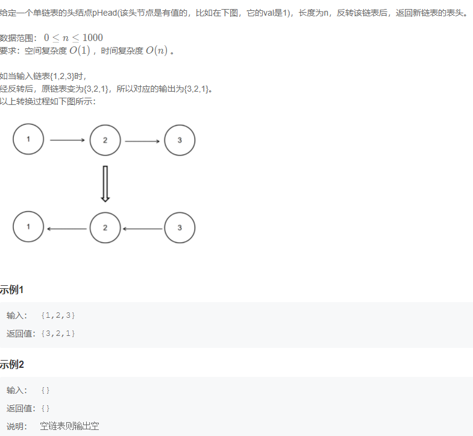
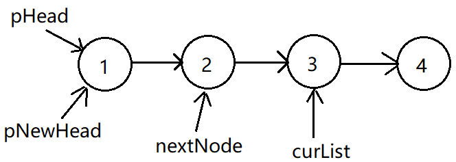
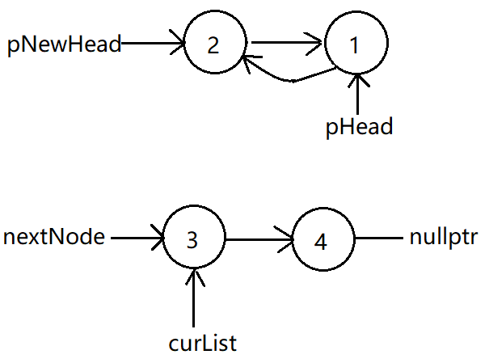
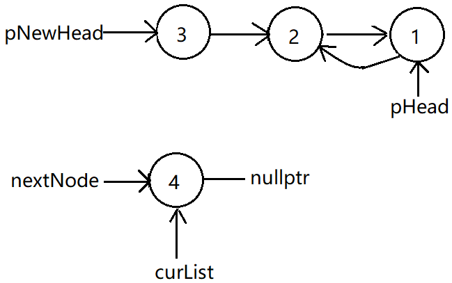
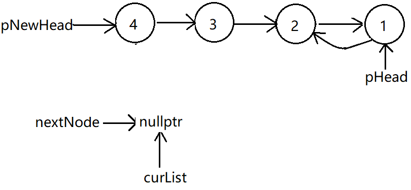
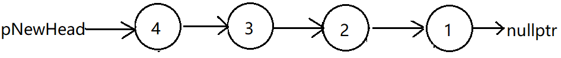

反转链表
来源：牛客网 NC78 反转链表

翻转，可以利用栈的知识去解决，先把链表从表头到表尾的顺序按序入栈。然后再出栈，按照先出栈的结点顺序串起来的链表便是目标要求的新链表。但是如果用栈，空间复杂度就是O(n)，所以用指针来解决。
以四个结点为例：
第一轮循环：

第一轮循环结束后：

第二轮结束后：

第三轮结束后：

跳出 while 循环后，将新链表的末尾结点的next域指向nullptr。

struct ListNode {
int val;
struct ListNode *next;
ListNode(int x) :
val(x), next(NULL) {
}
};
class Solution {
public:
ListNode* ReverseList(ListNode* pHead) {
if (pHead == nullptr)
return pHead;
ListNode* pNewHead = pHead; // 新链的链头
ListNode* nextNode = pHead->next; // 下一下待翻转结点
ListNode* curList; // 当前待翻转链表链头
while (nextNode != nullptr)
{
curList = nextNode->next;
nextNode->next = pNewHead;
pNewHead = nextNode;
nextNode = curList;
}
pHead->next = nullptr; // 令新链表的尾部元素的next域指向空指针
return pNewHead;
}
void Print(ListNode* pHead)
{
while (pHead != nullptr)
{
cout << pHead->val << " ";
pHead = pHead->next;
}
}
};
int main(int argc, char *argv[])
{
Solution s;
ListNode* pHead = new ListNode(1);
ListNode* p = pHead;
for (int i = 2; i < 10; i++)
{
p->next = new ListNode(i);
p = p->next;
}
cout << "before ReverseList: " << endl;
s.Print(pHead);
pHead = s.ReverseList(pHead);
cout << "\nafter ReverseList: " << endl;
s.Print(pHead);
return 0;
}
输出：
before ReverseList:
1 2 3 4 5 6 7 8 9
after ReverseList:
9 8 7 6 5 4 3 2 1